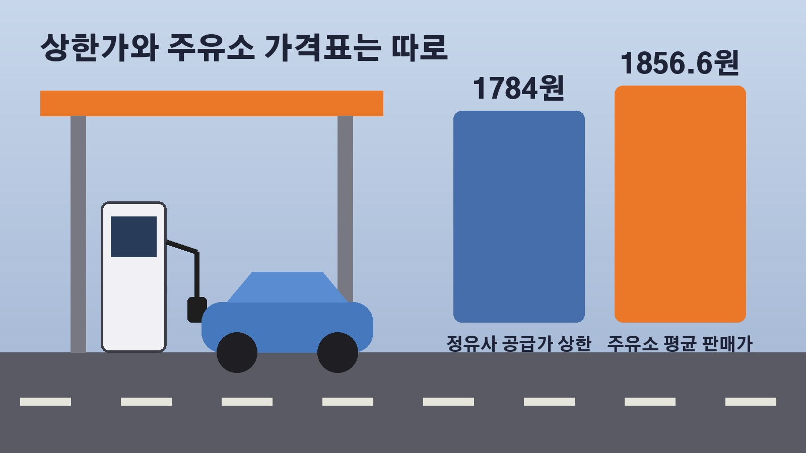

석유 최고가격 4주 더 동결, 휘발유 상한 1784원인데 주유소 평균은 1856원인 까닭과 커지는 손실보전 부담

요즘 주유소 가격판을 보면서 최고가격이 정해져 있다는데 왜 가격표 숫자는 더 높을까 궁금하셨던 분들 계실 거예요. 정부가 11차 석유 최고가격을 이번에도 그대로 묶기로 했습니다. 이번 결정으로 무엇이 유지되는지, 주유소 가격과는 어떻게 다른지, 그리고 이 제도를 언제까지 이어갈 수 있을지를 둘러싼 이야기까지 차례로 정리해 볼게요.
11차 최고가격, 무엇이 그대로 유지되나
산업통상부는 16일 11차 석유 최고가격을 10차와 같은 수준으로 동결한다고 발표했어요. 17일 0시부터 4주 동안 적용되고, 리터당 휘발유 1784원, 경유 1773원, 등유 1380원입니다. 지난 6월 말 미국과 이란의 종전 합의 때 7차 최고가격을 유종마다 150원씩 내린 뒤로 7차부터 11차까지 같은 가격이 이어지고 있어요.
정부가 밝힌 이유는 서민 물가 부담과 석유 수급 상황이에요. 15일 기준 브렌트유는 배럴당 105.9달러, 두바이유는 107.0달러, 서부 텍사스산 원유는 98.0달러로 여전히 100달러 안팎입니다. 9월 소비자물가 상승률은 2.9퍼센트로 조금 내려왔지만 석유류 물가는 1년 전보다 14.8퍼센트 올랐어요. 호르무즈 해협을 지나는 선박에 대한 이란의 공격과 예멘 후티 반군의 사우디아라비아 시설 공격으로 중동 긴장이 이어지고 있다는 점도 함께 고려됐습니다.
상한가와 주유소 가격표가 다른 이유
여기서 헷갈리기 쉬운 부분이 있어요. 석유 최고가격제는 주유소 판매가를 직접 묶는 제도가 아니라, 정유사가 공급하는 석유 제품 가격에 상한을 두는 제도입니다. 그래서 발표된 상한가와 동네 주유소 가격표의 숫자는 따로 봐야 해요.
한국석유공사 유가정보시스템 오피넷 집계를 보면 10월 둘째 주 전국 주유소 휘발유 평균 판매가는 리터당 1856.6원, 경유는 1842.8원이었어요. 지난주보다 휘발유는 0.9원, 경유는 0.5원 내려 22주 연속 하락했지만 내림 폭은 아주 작습니다. 공급가 상한 1784원과 주유소 평균 1856.6원 사이에 차이가 보이는 것도 이 제도가 정유사 공급 단계에 걸려 있기 때문이에요.
기름 소비는 줄었을까, 9월 반등을 둘러싼 해석
가격을 묶으면 소비가 잘 줄지 않는다는 걱정이 꾸준히 나왔는데, 9월 숫자가 그 논쟁에 불을 붙였어요. 9월 주유소 휘발유 판매량이 1년 전보다 3.0퍼센트 늘면서 3월 이후 처음으로 증가세로 돌아섰거든요.
산업부는 짧아진 추석 연휴에 수요가 몰리고 고속도로 주유소 특별할인이 겹친 일시적인 영향이라고 설명했어요. 9월 늘어난 휘발유 소비 약 3.6만 킬로리터 가운데 약 2.9만 킬로리터가 추석 연휴가 있던 넷째 주에 몰렸다는 거예요. 10월 첫째와 둘째 주 판매량은 5.5퍼센트 줄었고, 제도가 시작된 3월 둘째 주부터 10월 둘째 주까지 누적으로 보면 휘발유는 1.7퍼센트, 경유는 7.6퍼센트 감소했다고 밝혔습니다. 반면 가격 신호가 흐려져 아낄 이유가 약해졌다는 지적도 함께 나오고 있어요.
정유사 손실보전 5조 6500억 원과 수출 제한
최고가격제는 정유사가 상한가 때문에 본 손실을 정부가 재정으로 메워 주는 구조예요. 정부는 추가경정예산에 예비비 4조 2천억 원을 편성했고, 내년 예산안에도 올해 4분기분 1조 4497억 원을 넣었습니다. 합치면 약 5조 6500억 원이에요. 산업부는 최고가격과 시장 추정가격의 차이가 리터당 100원 벌어질 때마다 약 1조 5천억 원이 필요하다고 보고 있어요.

보전액은 원가를 기준으로 계산합니다. 원유 구입비와 운송비, 보험료, 정제와 유통 비용 등을 더한 원가에 적정 마진을 붙인 금액이 최고가격보다 높으면 그 차액 범위에서 정하는 방식이에요. 정유업계는 싱가포르 국제 석유제품 가격과 수출 제한에 따른 기회비용까지 따져야 한다고 맞서고 있고, 업계가 추산하는 손실은 6월 말 4조 원대에서 최근 7조에서 8조 원으로 불었다고 해요. 업계 추산대로라면 준비된 재원보다 최대 2조 원 넘게 모자랍니다.
수출 제한도 쟁점이에요. 정부는 3월부터 휘발유와 경유, 등유의 월별 수출량을 전년 같은 달 물량 이내로 묶고 있는데, 업계는 이 제한부터 풀어 달라고 요청하고 있어요. 산업부는 국내 수급에 문제가 없는 범위에서 업계와 소통하며 방안을 찾겠다고 했습니다.
언제 끝날까, 출구전략과 국제통화기금 권고
정부는 3월 13일 1차 최고가격을 도입하면서 시행 기간을 6개월 정도로 예상했는데, 이번 11차로 7개월을 넘기게 됐어요. 양기욱 산업부 산업자원안보실장은 호르무즈 통항이 안정되고 국제유가 변동성이 어느 정도 낮아지면 최고가격제를 끝낸다는 원칙에는 변함이 없고, 중동 상황에 따라 언제 어떻게 출구전략을 찾을지 고민하고 있다고 밝혔습니다.
최고가격제와 별개로 유류세 인하도 이어지고 있어요. 정부는 지난달 휘발유 15퍼센트, 경유와 부탄 25퍼센트 인하 조치를 11월 말까지 연장했는데, 언제 끝낼지에 대한 기준은 따로 내놓지 않았습니다. 유류세 인하는 올해로 5년째예요.
바깥에서는 다른 목소리도 나와요. 국제통화기금은 13일 낸 10월 세계경제전망에서 광범위한 연료 보조금과 일반적인 감세, 가격 통제는 피해야 한다고 했습니다. 이런 방식은 취약계층에 대한 선별적 현금 지원보다 3배에서 22배 많은 재정이 든다는 분석이에요. 나라살림연구소 자료로는 소득 하위 20퍼센트 가구의 66.7퍼센트가 연료 지출이 아예 없어 유류세 인하 혜택을 직접 받지 못한다고 하고요. 경향신문 사설도 한 번에 끝내면 가격이 급등할 수 있으니 상한을 단계적으로 높이고 생계형 수요자와 취약계층은 골라서 지원하자고 제안했습니다.
정리하면 11차가 적용되는 4주 동안 휘발유 1784원, 경유 1773원의 정유사 공급가 상한이 그대로 유지되고, 유류세 인하도 11월 말까지 이어집니다. 다만 늘어나는 재정 부담과 소비 신호 문제 때문에 끝낼 시점과 방법을 밝히라는 요구가 커지고 있어서, 다음 12차 발표에서 정부가 어떤 판단을 내릴지 지켜볼 만해요.
참고한 기사: 연합뉴스 석유 최고가격 다시 동결, 100달러대 고유가에도 물가 고려 2026년 10월 16일, 에너지경제신문 석유 최고가 또 동결, 정부 당분간 유지 2026년 10월 17일, 매일경제 석유 최고가격 4번째 동결 2026년 10월 18일, 뉴데일리 7개월 넘긴 석유최고가격제, 손실 눈덩이와 수출 제한에 정유사 속앓이 2026년 10월 18일, 이데일리 국제통화기금, 기름값 통제보다 선별적 현금지원이 효율적 2026년 10월 19일, 뉴스1 소폭 하락에도 잡히지 않는 주유소 기름값 2026년 10월 18일, 경향신문 사설 석유 최고가격제 7개월, 연장이 능사가 아니다 2026년 10월 18일, 대한민국 정책브리핑 산업통상부 설명자료 2026년 10월 17일
태그
석유최고가격제 11차석유최고가격 휘발유가격 경유가격 주유소기름값 오피넷 유류세인하연장 정유사손실보전 국제유가 국제통화기금